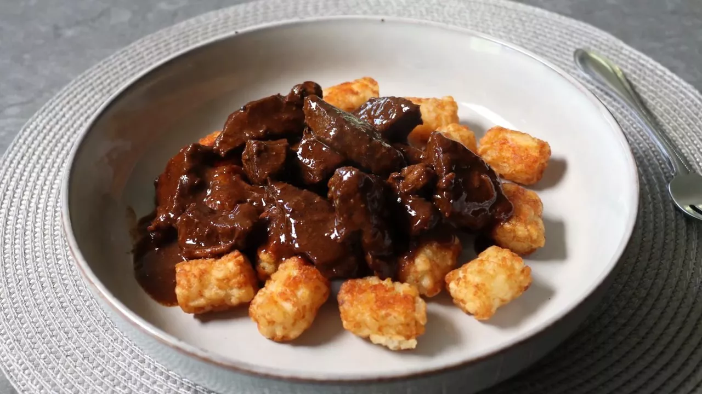

Beef Tips & Tots

How to make Beef Tips & Tots
Beef tips & tots are a tasty looking recipe I spotted on allrecipes.com.
Ingredients
- 1 ½ pounds beef round steak
- 1 teaspoon kosher salt, or to taste
- ½ teaspoon freshly ground black pepper
- 1 tablespoon vegetable oil
- 2 teaspoons tomato paste
- 2 cloves garlic, minced
- 4 tablespoons butter
- 2 tablespoons all-purpose flour
- 2 ¼ cups low sodium beef broth
- 1 (28 ounce) package frozen bite-size potato
nuggets (such as Tater Tots®)
Steps
- Slice beef into 3/4-inch strips; then slice these pieces, at an angle, into smaller
"tips." Season beef with salt and pepper.
- Heat oil in a large skillet over high heat until shimmering. Transfer in beef,
arrange in a single layer. Let the meat sear until browned,
3 to 5 minutes,
before turning over and browning the other side.
- Reduce heat to medium and add tomato paste, garlic, and butter. Stir everything
until the butter melts, and then stir in the flour. Cook
and stir for 1 minute.
- Stir in broth. Raise heat to high and bring to a simmer. Reduce to low, cover, and
cook until beef is starting to get tender, about 1 hour
and 15 minutes.
- Meanwhile, preheat the oven to 425 degrees F (220 degrees C).
- Uncover, turn heat to medium, and simer, stirring occasionally, until the sauce
has thickened, and the meat is tender, about 30 minutes.
- while meat simmers, bake potato nuggets in the preheated oven until crispy and
heated through, 20 to 25 minutes.
- Taste beef tips and adjust the seasoning. Serve immediately over hot potato
nuggets.